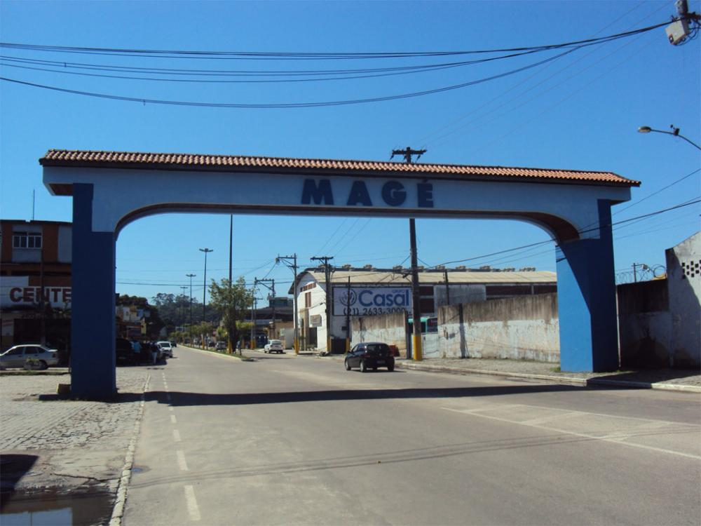

Eventos
-
Praça de Cross Training
A nova Praça de Cross Training, no Centro de Piabetá, é um novo espaço lugar pensado para estimular hábitos saudáveis, promover o bem-estar e fortalecer a comunidade...
Saiba Mais -
Liga carioca de Downhill
Nos dias 05 e 06 de julho, Magé recebe a Liga Carioca de Downhill 2025 – Etapa única do campeonato que acontece em Raiz da Serra...
Saiba Mais
